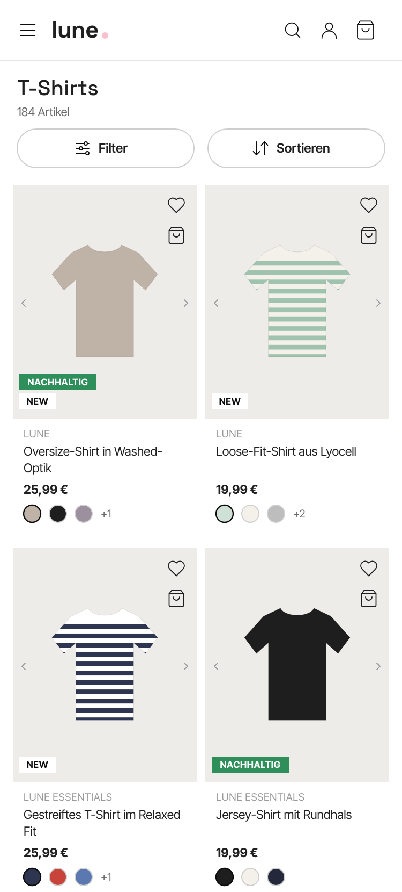
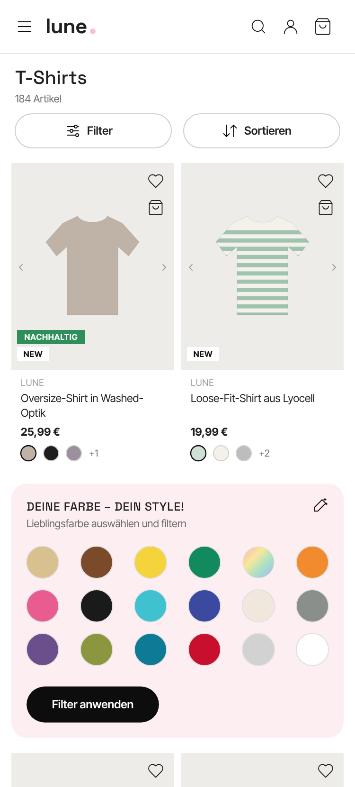
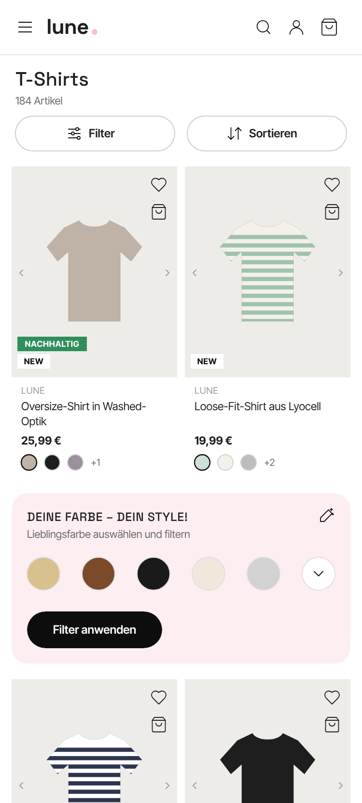
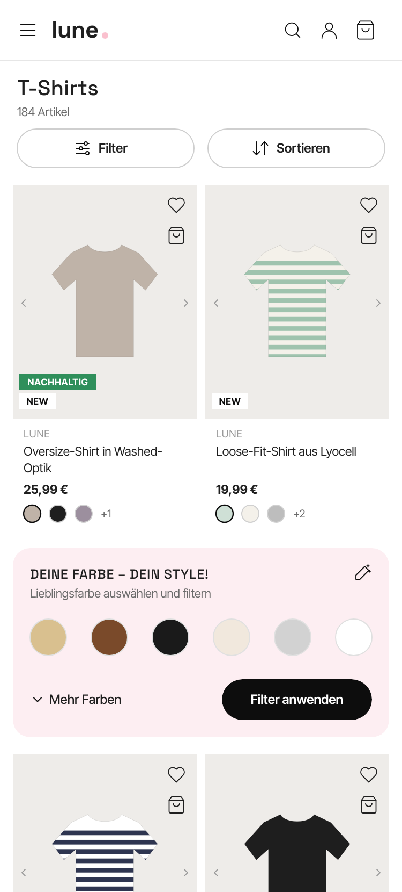

A colour filter that cost clicks
Colour is one of the first things people decide on when shopping for clothes – yet on mobile, the colour filter was buried in a long filter menu. I designed an inline colour picker for the product grid and tested three versions of it. None of them won. Here’s why that was still worth it.
- My role
- [e.g. Lead designer – concept, three variants, UI, test setup]
- Team
- [e.g. UX researcher, developer, client e-commerce team]
- Timeline
- [e.g. X weeks incl. test runtime]
- Methods
- Hypothesis, 3 design iterations, A/B/n test on mobile




Screens recreated and anonymised – retailer branding and model photography replaced with a fictional shop and illustrations.
variants of one new feature, tested against the original
variants with a significant effect on sales
product page views – significant in all three variants
The most important filter, one level too deep
When browsing clothes on a phone, many people already know the colour they want. But to filter by it, they had to open the full filter menu, scroll to “colour” and apply – a detour most users never take.
[Add what triggered the test – e.g. analytics on filter usage, colour being the most used filter on desktop, or client input.]
Hypothesis
If users can filter by colour directly while browsing the product grid,
then they find matching products faster and buy more often,
because the most relevant filter is available at the moment they need it – without opening the filter menu.
[Replace with the original hypothesis if it differed.]
Three iterations of one idea
All three variants placed a colour picker as a banner after the first product row – visible without scrolling far, but after users had seen the first products. They differed in how much choice they showed up front:
VAR 01 – everything
All 18 colours at once. Maximum choice, but the banner takes up almost a full screen.
VAR 02 – focus + chevron
Five key colours and a chevron to expand. Compact, but the expand action is an icon only.
VAR 03 – focus + label
Six key colours and a labelled “more colours” link, with the apply button next to it.
Shared decisions
Same placement, same copy, same apply button – so differences could be traced back to the amount of choice.
Results: no winner
None of the three variants improved sales. All of them trended slightly negative, without reaching significance. What did move significantly in every variant: users opened about 1% fewer product pages.
Interestingly, the most compact variant (VAR 02) was the least negative for sales – the more space the banner took, the stronger the negative trend.
Absolute conversion rates omitted for confidentiality.
What I took away
Anything in the grid competes with products
On a phone, the product grid is what people came for. A banner between products – however useful – pushes the next products down and takes attention away from them. The drop in product page views shows exactly that.
Less space, less harm
The pattern across the variants points the same way: the problem wasn’t the idea of a colour filter, but its footprint in the grid.
Next: move the filter, not the products
The follow-up I’d test: colour chips in a slim, sticky filter bar above the grid – same shortcut, no products displaced.
[What happened next – was a follow-up tested?]